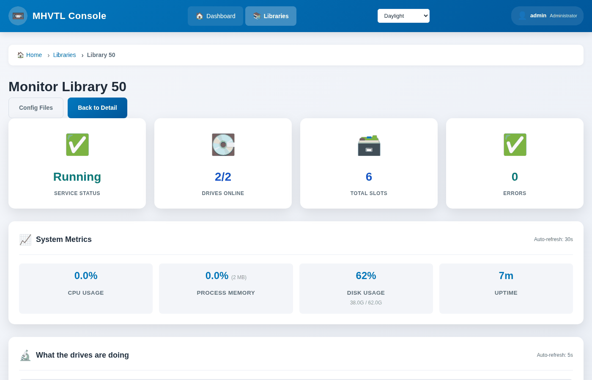

Watching a drive while it works
A tape drive is least willing to talk exactly when it is most interesting.
The kernel gives the SCSI reservation to whoever is writing, so for the whole
of a backup mt and mtx answer device busy, and every tool built on
them goes quiet.
This console shows the drive working anyway.
On the library page
The Tape Drives card has a line per drive, refreshed every five seconds:

That is library 30 during a real backup. The bar is how full the cartridge is; it turns amber past 75% and red past 90%.
The same panel is on the monitor page, at /libraries/monitor/<id>/.
{kind=link}

On the command line
$ sudo mhvtl status activity 30
Library 30: 1 of 4 drive(s) hold a tape, 1 working
DRIVE STATE BARCODE COUNTERS
----- ------- -------- ----------------------------------------------------
31 writing G03001TA 190.7 MB written - 15.8% of the tape, 2.41x compression
32 empty - -
33 empty - -
34 empty - -
The same sentence the page shows, because both ask one service. Nothing is worked out in the browser.
What the states mean
writing/readingThe counters grew since the previous reading.
holdingA cartridge is loaded and the counters did not move.
emptyNo cartridge in the drive.
silentThe drive daemon did not answer - usually one that is stopped. Check with
systemctl status vtltape@31.
Where the numbers come from
MHVTL's drive daemon keeps its own counters and reports them over the message queue it already listens on, which the SCSI reservation does not touch. The command that asks is our own addition to MHVTL.
writtenBytes the backup handed the drive.
% of the tapeHow much of the cartridge is used - measured in what actually went to the medium, which is less than written when the data compresses.
compressionBytes in over bytes on the medium. Ordinary files compress about two to one; a ratio of 1.0 is not shown, because most test data does not compress and a clause saying so on every line is noise.
Two readings, not one
MHVTL reports totals, not a rate, so writing means the number grew since the last reading. A command run once has nothing to compare with and waits a second to read again:
$ sudo mhvtl status activity 30 --settle 2 # two readings, 2s apart
$ sudo mhvtl status activity 30 --settle 0 # one reading; never "writing"
The web page uses the second form, because it polls: the next refresh is a better answer than a request that blocks.
If it says holding while a backup is running
The backup may be writing to a different drive.
mhvtl status library 30says which drive holds which cartridge.The two readings may have been more than two minutes apart, which makes the older one useless. Ask again.
If mt and the panel disagree
They can, and the panel is usually right. mt reports what the kernel's
tape driver believes, which can be stale:
$ sudo mhvtl status drive 31 # through mt
tape loaded no
$ sudo mhvtl status activity 30 # through the drive daemon
31 holding G03001TA 0 B written - 0.0% of the tape
$ sudo mhvtl status library 30 # through the robot
0 yes G03001TA 1
Two of the three agree that the cartridge is in the drive, and they are the two that matter: the robot moved it there and the daemon holds it. See When something is wrong.